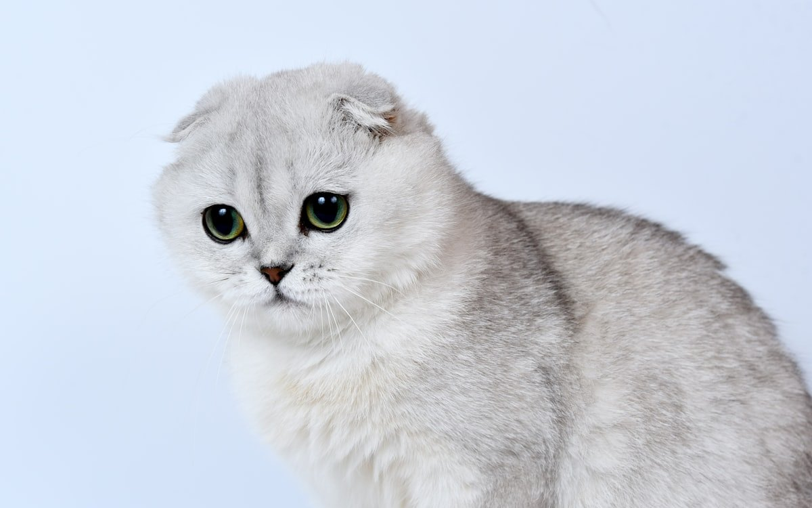

스코티시폴드 수명과 접힌 귀의 진실 — 근거 있는 숫자로 정리한 입양 가이드

스코티시폴드 수명부터 답하면, 이 품종만 따로 센 대규모 자료는 없고 영국 VetCompass 7,936마리 사망기록에서 순종 고양이 평균 기대수명은 10.41년(믹스 11.89년)입니다. 웹에 흔한 '12~15년'은 출처가 확인되지 않습니다. 접힌 귀와 동그란 얼굴로 큰 인기를 끄는 고양이지만, 이 접힌 귀 자체가 건강 문제와 직결된다는 사실은 의외로 잘 알려져 있지 않습니다. 이 글은 스코티시폴드의 매력만이 아니라, 입양 전 반드시 알아야 할 유전 질환과 국내 진료기록 속 이 품종의 위치를 정직하게 다룹니다.
⚠️ 접힌 귀의 진실 (가장 중요)
스코티시폴드의 귀를 접히게 만드는 유전자는 귀 연골에만 작용하는 것이 아니라 전신의 연골 발달에 영향을 주는 '골연골이형성증(Osteochondrodysplasia)'을 동반합니다.
- 접힌 귀 스코티시폴드는 정도의 차이만 있을 뿐 전부 다리·꼬리·관절의 연골 이상을 안고 태어납니다. 영국 UFAW 의 유전성 복지 문제 자료(Genetic Welfare Problems — Scottish Fold)는 "접힌 귀 고양이는 모두 어느 정도 골연골이형성증이 생긴다"고 명시하고, 엑스레이상 뼈 이상은 생후 7주령부터 확인된다고 설명합니다. 접힌 귀 유전자를 둘 다 가진 개체는 어릴 때부터 심하게, 하나만 가진 개체는 정도가 제각각이지만 진행성 관절염은 피하지 못합니다.
- 이로 인해 평생 관절염·통증을 겪을 수 있으며, 완치되는 질환이 아닙니다.
- 영국 고양이 등록기관 GCCF 는 1974년 이 품종을 공인 목록에서 제외했고, 국제고양이연맹(FIFe)도 등록을 금지합니다. 국제 고양이 복지단체 International Cat Care 는 "통증을 일으키는 것으로 알려진 돌연변이를 계속 번식시키는 것은 비윤리적"이라는 입장입니다(Scottish Fold Disease).
- 반면 품종 등록단체인 미국 CFA 는 접힌 귀를 반드시 선 귀와 교배하면 관절·뼈 문제를 최소화할 수 있고, 잘 번식된 개체는 꼬리가 유연하다고 설명합니다(CFA 품종 소개). 복지단체와 등록단체의 설명이 이렇게 다르니, 지금 듣고 있는 설명이 어느 쪽 것인지 알고 판단하세요.
입양을 고려한다면 이 사실을 반드시 알고, 관절 통증 관리에 대한 각오와 준비가 필요합니다.
한눈에 보는 스코티시폴드
| 크기 | 중형 (CFA 품종 설명 기준 — 공식 체중 범위는 제시되지 않음) |
|---|---|
| 수명 | 품종 단독 대규모 자료 없음 · 영국 VetCompass 순종 평균 10.41년, 믹스 11.89년 |
| 성격 | 온순하고 조용, 사람을 잘 따름 |
| 특징 | 접힌 귀 (유전성 관절 질환 동반) |
| 관리 난이도 | 높음 (관절 관리 필요) |
| 초보자 적합도 | 신중한 선택 필요 |
참고로 귀가 접히지 않고 선 귀(스트레이트)로 태어난 개체는 문제의 유전자를 갖지 않아 관절 위험이 낮습니다.
수명 — '12~15년'은 어디서 나온 숫자일까
스코티시폴드 수명을 검색하면 거의 모든 글이 12~15년이라고 쓰지만, 출처를 단 글은 찾기 어렵습니다. 품종별 수명을 실제 사망기록으로 계산한 가장 큰 자료는 영국 VetCompass 의 2019년 사망 고양이 7,936마리 수명표(Teng 외, J Feline Med Surg 2024)인데, 품종별 수치가 나온 12개 품종(버미즈 14.42년, 페르시안 10.93년, 랙돌 10.31년, 브리티시 9.58년 등)에 스코티시폴드는 들어 있지 않습니다. 영국에서는 사망이 15마리 이상 확인될 만큼 흔한 품종이 아니기 때문입니다. 인용할 수 있는 숫자는 순종 전체 평균 10.41년(95% 신뢰구간 9.99~10.83), 믹스 11.89년이고, 순종은 3세가 되기 전에 죽을 위험(오즈비)이 믹스의 1.83배였습니다.
이 숫자는 영국 사육환경 기준이라는 한계가 있습니다. 영국은 사망 고양이의 88.2%가 믹스이고 사망의 83.7%가 안락사라, 수명 통계가 만들어지는 조건 자체가 우리와 다릅니다. 국내 자료는 바로 아래에서 다룹니다.
국내 진료기록 속 스코티시폴드 — 병원 방문 3위, 귀·순환기 진료가 많다
전국 30개 동물병원의 2016~2017년 진료기록 32,728건을 품종·질환별로 분석한 국내 논문 (Lee 외, J Vet Clin 2022)에서 스코티시폴드는 2,545건(7.7%)으로 코리안숏헤어(40.5%)·페르시안(10.3%)에 이어 3위였습니다. 선 귀인 스코티시스트레이트는 238건(0.73%)으로 따로 집계됐습니다. 영국 VetCompass 자료에서 스코티시폴드가 수명표에 오르지도 못할 만큼 드문 것과 정반대입니다. 논문 자체도 순종 비중이 낮은 미국·영국보다 일본(믹스 36.2%)과 비슷한 분포라고 설명합니다.
한 가지 주의할 점은 7.7%가 '키우는 비중'이 아니라 '병원 방문 건수' 비중이라는 것입니다. 같은 고양이가 다른 문제로 다시 오면 별도 건으로 세었으므로, 병원에 자주 가는 품종일수록 숫자가 커집니다.
코리안숏헤어와 비교한 질환군 분포
| 질환군(ICD-11 분류) | 스코티시폴드 | 코리안숏헤어 |
|---|---|---|
| 귀 질환 | 3.8% | 2.2% |
| 순환기 질환 | 1.3% | 0.5% |
| 호흡기 질환 | 8.4% | 5.9% |
| 근골격계 질환 | 4.0% | 4.6% |
| 소화기 질환 | 14.2% | 19.6% |
| 외인성 원인(사고·외상 등) | 2.5% | 4.4% |
각 품종의 진료 건수 중 해당 질환군이 차지한 비율입니다(Lee 외 2022, Table 3). 95% 신뢰구간은 논문에 있으며, 귀 질환은 3.1~4.6% 대 1.9~2.4%로 구간이 겹치지 않습니다.
귀 질환이 코리안숏헤어의 1.7배 비중으로 잡힌 이유를 논문은 이렇게 설명합니다. 선천적으로 휜 귀 연골 때문에 외이도가 다른 품종보다 좁고, 그래서 귀지가 쌓여 귀 질환이 잦다는 것입니다. 아래 귀 관리 항목이 이 품종에서 유독 중요한 근거입니다.
순환기 질환은 페르시안(1.8%) 다음으로 높았고, 논문은 페르시안·터키시앙고라·스코티시폴드를 비대성심근증(HCM) 소인 품종으로 듭니다. 다만 영어권 자료와 결이 다른 대목이 있습니다. 코넬대학교 고양이건강센터가 HCM 호발 품종으로 드는 목록(메인쿤·랙돌·브리티시숏헤어·아메리칸숏헤어·스핑크스·뱅갈·페르시안 등)에 스코티시폴드는 없습니다(Cornell Feline Health Center — HCM). 국내 기록의 높은 순환기 비중이 품종 소인 때문인지, 이 품종 보호자가 심장 검사를 더 자주 받기 때문인지는 이 자료만으로 구분할 수 없습니다.
반대로 근골격계 질환은 4.0%로 코리안숏헤어(4.6%)보다 높지 않았습니다. 이 숫자를 '관절 문제가 실제로는 드물다'로 읽으면 안 됩니다. 이 자료는 표본의 77.6%가 4세 미만(평균 2.5세)인 젊은 집단이고, 진료기록은 보호자가 병원에 데려온 이유만 셉니다. 통증 때문에 덜 움직이는 것을 '얌전한 성격'으로 넘기면 기록 자체가 남지 않습니다. 접힌 귀 개체 전부에서 골연골이형성증이 나타난다는 영국 UFAW 자료와 근골격 진료 비중이 평범한 국내 기록 사이의 간극에는 병원에 오지 않은 통증이 있을 수 있습니다.
국내 수명 자료 — 순종이 믹스보다 오래 산다는 결과, 그러나
서울 6개 동물병원의 2004~2022년 사망기록으로 고양이 1,213마리의 생존을 분석한 국내 논문 (Yang 외, Front Vet Sci 2025)에도 스코티시폴드만의 수치는 없습니다. 순종과 믹스로만 나눴는데, 순종 중앙 생존 1,827일(약 5년), 믹스 1,012.5일(약 2.8년)로 영국과 방향이 반대였습니다. 논문은 국내 믹스 고양이 상당수가 길고양이 출신이라는 점을 이유로 듭니다. 2018년 농림축산식품부 조사에서 고양이 보호자의 20.6%가 길고양이를 데려와 키운다고 답했고, 길고양이 출신은 감염병·외상 위험이 높습니다.
이 숫자를 '우리 고양이는 5년 산다'로 읽으면 안 됩니다. 병원에서 사망이 확인된 개체만 표본이라 오래 살아 있는 고양이는 빠져 있고, 논문도 아픈 동물이 과대표집됐을 수 있다고 밝힙니다. 전체 고양이의 출생 시 기대수명이 5.38년으로 계산된 것도 같은 이유입니다. 이 자료가 말해 주는 것은 절대 수명이 아니라, '순종이라서 수명이 짧다'는 영국식 결론을 국내에 그대로 가져올 수 없다는 점입니다.
성격과 기질
스코티시폴드는 온순하고 조용하며 다정한 성격으로 유명합니다. 사람을 잘 따르고 얌전해 가족과 잘 지냅니다. 다만 관절 통증이 있으면 활동을 꺼리고 얌전해 보일 수 있는데, 이를 "원래 순한 성격"으로 오해하면 통증을 놓칠 수 있습니다. 평소 움직임을 잘 관찰하세요.
관절 건강 관리법
완치가 목표가 아니라 통증 완화와 삶의 질 유지가 목표입니다. International Cat Care 도 "질환 자체를 치료하는 방법은 없고, 수의사가 적절한 약으로 통증을 관리하도록 돕는다"고 설명합니다.
- 체중 관리 — 관절 부담을 줄이는 가장 확실한 방법. 비만은 절대 금물입니다.
- 낮은 캣타워·완만한 계단 — 높은 곳에서 뛰어내리지 않도록 환경을 조성하세요.
- 미끄럼 방지 매트 — 관절에 가해지는 충격을 줄입니다.
- 정기적인 관절 검진 — 통증·움직임 변화를 조기에 파악하고 수의사와 관리 계획을 세우세요.
- 따뜻한 환경 — 관절 질환은 추위에 악화될 수 있어 겨울철 보온에 신경 쓰세요.
수분 섭취와 사료 관리 등 고양이 공통 관리도 필요합니다. (사료 고르는 기준)
입양 전 현실 체크 — 비용·시간·집 구조
스코티시폴드의 유지비는 일반적인 고양이 비용에 관절 관리비가 얹히는 구조라고 보는 편이 정확합니다. 아래 금액은 수도권 기준의 대략적인 범위이며, 병원·지역·개체 상태에 따라 편차가 큽니다.
| 사료·간식 | 월 4만~7만 원 (습식 병행 시 상단) |
|---|---|
| 모래 | 월 1만5천~3만 원 |
| 관절 보조제 | 월 2만~4만 원 (수의사 권고 시) |
| 연 1회 기본 검진 | 10만~20만 원 |
| 관절 평가(방사선 포함) | 회당 10만~25만 원 |
| 월평균(대략) | 8만~14만 원 · 통증 관리 시작 후 증가 |
펫보험을 믿고 있다면 약관부터 확인하세요. 골연골이형성증처럼 품종에 내재된 선천·유전 질환은 보장에서 제외되도록 설계된 상품이 적지 않습니다. 가입 전에 '선천성·유전성 질환' 항목과 가입 시점의 고지 의무를 직접 읽어보세요. 이 품종에서 가장 돈이 드는 항목이 정작 보장에서 빠질 수 있습니다.
하루에 필요한 돌봄 시간
밥·화장실·빗질을 포함해 하루 30~40분이면 기본 관리는 가능합니다. 다만 놀이는 10~15분씩 두 번으로 나누는 편이 좋습니다. 한 번에 길게 놀면 관절에 무리가 가고, 통증이 있는 아이는 다음 날 움직임이 눈에 띄게 줄어듭니다. 통증 관리를 시작한 뒤에는 투약과 상태 기록에 하루 10분 정도가 더 붙는다고 생각하세요.
원룸·아파트에서 키울 수 있을까
가능합니다. 오히려 이 품종에는 넓이보다 '낮고 안전한 동선'이 중요해서, 높은 가구가 적은 좁은 집이 불리하지 않습니다. 핵심은 고양이가 자주 올라가는 자리(창가, 소파, 침대, 식탁)마다 중간 발판을 두어 한 번에 뛰어오르지 않아도 되게 만드는 것입니다. 뛰어내릴 때 착지 충격이 뛰어오를 때보다 크므로, 내려오는 경로에 더 신경 쓰세요.
집을 비울 때 주의할 점
성묘라면 하루 8~10시간 정도의 부재는 대체로 무리 없이 지냅니다. 다만 혼자 있는 동안 활동이 거의 없으면 관절이 굳어 저녁에 더 뻣뻣해 보일 수 있으니, 귀가 후 짧게라도 몸을 움직이게 해 주세요. 1박 이상 집을 비울 때는 자동급식기보다 방문 돌봄을 권합니다. 절뚝임이나 식욕 저하 같은 신호는 기계가 아니라 사람이 봐야 알아챌 수 있습니다.
나이대별 관리 포인트
새끼 시기 (~12개월) — 골격 이상이 처음 드러나는 때
접힌 귀 개체의 뼈 이상은 엑스레이로는 생후 7주령부터 보이고, 유전자를 하나만 가진 개체도 이르면 6개월령에 뚜렷한 증상이 나타날 수 있습니다(UFAW). 이 시기에는 다음을 주기적으로 확인해 두세요.
- 꼬리 유연성 — 손으로 가볍게 훑었을 때 부드럽게 휘지 않고 짧고 굵으며 뻣뻣하게 느껴지면 수의사에게 알리세요. 굵고 뻣뻣한 꼬리는 UFAW 와 International Cat Care 가 공통으로 드는 대표 징후이며, 심하면 꼬리·발목·무릎 관절이 굳어 붙습니다.
- 걸음걸이 — 뒷다리를 모아 토끼처럼 뛰거나, 발목 관절이 유난히 두툼해 보이는지 살펴보세요.
- 놀이 반응 — 또래보다 유독 점프를 피하거나 착지 후 잠시 멈칫한다면 기록해 두었다가 검진 때 이야기하세요.
이 시기에 높은 점프를 반복하는 놀이는 피하고, 낚싯대는 바닥에 붙여 끌어주는 방식으로 사냥 욕구를 채워주는 것이 좋습니다.
성묘기 (1~7세) — 체중 하나만 지켜도 절반
이 시기 관리의 대부분은 체중으로 수렴합니다. 한 살 무렵의 체중을 기준값으로 적어두고 ±5% 안에서 유지하세요. 4kg 고양이의 400g은 사람으로 치면 결코 작은 증가가 아닙니다. 몸매 판단이 어렵다면 비만도 자가진단(BCS)으로 월 1회 확인해 보세요. 또 겉으로 멀쩡해 보이더라도 1~2년에 한 번 관절 상태를 기록해 두면, 나중에 변화를 비교할 기준이 생깁니다.
노령기 (8세~) — 통증은 '아픔'이 아니라 '변화'로 나타난다
관절 문제 위에 고양이 공통 노령 질환이 겹치는 시기입니다. 고양이는 통증을 소리로 잘 알리지 않기 때문에, 다음과 같은 생활 습관의 변화가 사실상 통증 신호 역할을 합니다.
- 늘 쓰던 캣타워 대신 바닥에서만 자기 시작함
- 화장실 턱을 넘다 가장자리에 실수함
- 특정 관절 한 곳만 유난히 오래 핥거나, 반대로 몸단장 자체가 눈에 띄게 줄어듦
- 안아 올리면 몸을 굳히거나 낮게 소리를 냄
이런 변화를 "나이 들어서 그렇다"로 넘기지 마세요. 통증 조절과 관절 관리는 처방이 필요한 영역이므로 반드시 수의사와 상의해야 합니다. 특히 사람용 진통제는 고양이에게 치명적일 수 있으니 어떤 경우에도 임의로 먹이지 마세요. 노령기에는 신장 수치 확인도 함께 챙기는 것이 좋습니다. (고양이 신부전 초기 증상)
그루밍·발톱·귀 관리 실전
스코티시폴드는 단모가 많지만 장모형인 하이랜드폴드도 있고, 어느 쪽이든 속털이 촘촘한 편입니다. 문제는 털 자체보다 몸을 굽히기 힘든 아이가 스스로 손질하지 못하는 부위에서 생깁니다.
- 단모 — 러버 브러시로 주 2~3회. 봄·가을 털갈이철에는 매일 짧게.
- 장모(하이랜드폴드) — 겨드랑이, 뒷다리 안쪽, 엉덩이 주변이 잘 엉킵니다. 슬리커 브러시로 결을 풀고 끝이 둥근 빗으로 마무리하세요.
- 발톱 — 2~3주 간격. 스크래칭은 발톱 바깥쪽의 낡은 껍질을 벗겨내는 행동인데, 관절이 불편하면 스크래처를 덜 쓰게 됩니다. 그러면 껍질이 남은 채 두껍게 자라 심할 경우 육구를 파고들 수 있습니다. 특히 앞발 안쪽의 며느리발톱은 바닥에 닿지 않아 놓치기 쉬우니 깎을 때마다 확인하세요.
- 귀 — 접힌 귀는 안쪽이 잘 보이지 않고, 휜 연골 때문에 외이도가 좁아 귀지가 쌓이기 쉽습니다. 국내 진료기록에서 귀 질환 비중이 코숏의 1.7배로 나온 이유입니다. 그렇다고 자주 세정하면 오히려 자극이 됩니다. 주 1회 겉귀만 열어 확인하고, 냄새나 갈색 분비물, 자꾸 긁는 행동이 있으면 병원에서 확인하세요. 면봉을 귓속으로 밀어 넣는 것은 금물입니다.
- 목욕 — 평소에는 필요 없습니다. 꼭 해야 한다면 미끄럼 방지 매트 위에서 짧게 끝내고, 오래 서 있게 하지 마세요.
털 상태는 통증 지표이기도 합니다. 등 가운데와 꼬리 밑만 유독 기름지고 비듬이 생긴다면, 미용이 밀린 게 아니라 몸을 굽혀 그 부위를 핥지 못하고 있다는 뜻일 수 있습니다. 빗질로 덮지 말고 검진 때 이 부위를 꼭 언급하세요.
초보 집사가 자주 하는 실수 5가지
- "원래 순한 애"라고 넘긴다 — 이 품종의 얌전함은 기질이면서 동시에 통증의 결과일 수 있습니다. 성격을 판단하지 말고 지난달과 비교하세요. 활동량이 줄었다면 성격이 아니라 몸을 의심할 때입니다.
- 큰 캣타워부터 산다 — 고양이는 높은 곳을 좋아한다는 통념 때문에 2m짜리를 들이는 경우가 많습니다. 스코티시폴드에게 필요한 것은 높이가 아니라 계단입니다. 한 단 높이 25cm 이하, 3단 이내가 현실적인 기준입니다.
- 보조제만 먹이고 끝낸다 — 관절 보조제는 말 그대로 보조입니다. 이미 절뚝이거나 점프를 피하는 단계라면 보조제만으로 해결되지 않습니다. 통증 조절은 진료와 처방의 영역이니 미루지 말고 병원에서 상담하세요.
- 선 귀와 접힌 귀를 구분하지 않는다 — 같은 배에서 태어나도 귀가 선 개체는 문제의 유전자를 갖지 않아 위험이 낮습니다. 반대로 접힌 귀인데 "우리 애는 괜찮다"고 넘기는 경우도 있습니다. 우리 고양이가 어느 쪽인지 정확히 알아야 관리 강도를 정할 수 있습니다.
- 겨울 잠자리를 방치한다 — 관절 통증은 추울 때 심해지기 쉬운데, 정작 고양이가 즐겨 눕는 자리가 창가 바닥인 집이 많습니다. 잠자리를 바닥에서 살짝 띄우고 외풍이 없는 곳으로 옮겨주는 것만으로도 겨울철 움직임이 달라집니다.
입양을 고민한다면
스코티시폴드는 분명 매력적인 고양이지만, 접힌 귀의 유전적 특성상 건강 관리에 더 많은 책임과 비용이 따를 수 있습니다. 입양을 결정한다면:
- 번식 환경이 투명한 곳인지 확인하고, 부모묘의 건강 이력을 물어보세요.
- 평생 관절 관리와 통증 치료에 대한 마음의 준비를 하세요.
- 이미 함께하고 있다면, 위 관리법을 실천하며 통증 신호를 잘 살펴주세요. 이 아이들에게는 보호자의 세심한 관리가 삶의 질을 크게 좌우합니다.
자주 묻는 질문 (FAQ)
Q. 스코티시폴드 수명은 몇 년인가요?
이 품종만 따로 집계한 대규모 수명 자료는 아직 없습니다. 영국 VetCompass 사망기록 7,936마리 자료에서 순종 고양이의 출생 시 기대수명은 10.41년, 믹스는 11.89년이었고, 스코티시폴드는 표본 부족으로 표에 오르지 못했습니다. 웹에 흔한 '12~15년'은 출처가 확인되지 않는 숫자입니다.
Q. 모든 스코티시폴드가 관절 질환이 있나요?
접힌 귀를 가진 개체는 정도의 차이는 있어도 유전적으로 연골 이상 소인을 가집니다. 선 귀(스트레이트) 개체는 해당 유전자가 없어 위험이 낮습니다.
Q. 관절 질환은 치료되나요?
완치는 어렵습니다. 체중 관리, 환경 조성, 통증 관리로 진행을 늦추고 삶의 질을 유지하는 것이 목표입니다. 반드시 수의사와 장기 관리 계획을 세우세요.
Q. 그래도 키우고 싶은데 괜찮을까요?
충분히 알고 책임질 준비가 되어 있다면 존중받을 선택입니다. 다만 매력적인 외모만 보고 결정하기보다, 평생의 건강 관리를 감당할 수 있는지 신중히 고민하시길 권합니다.